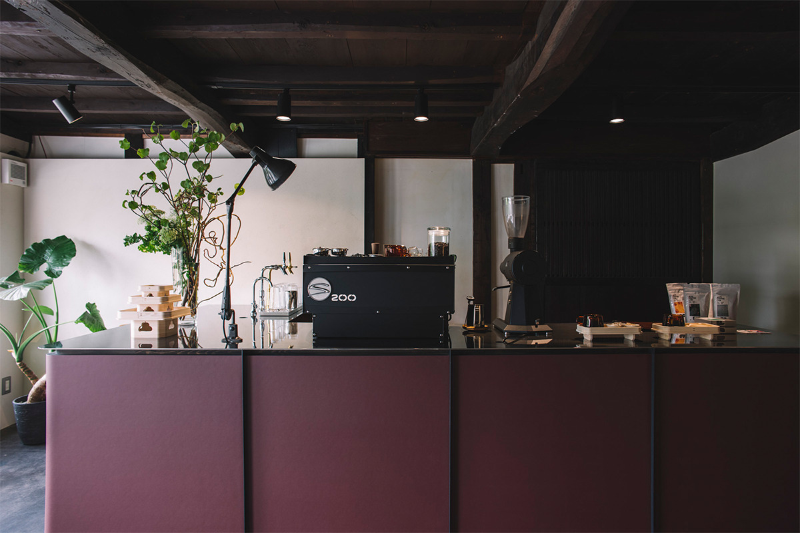
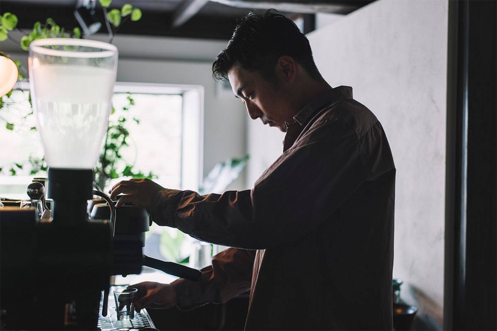
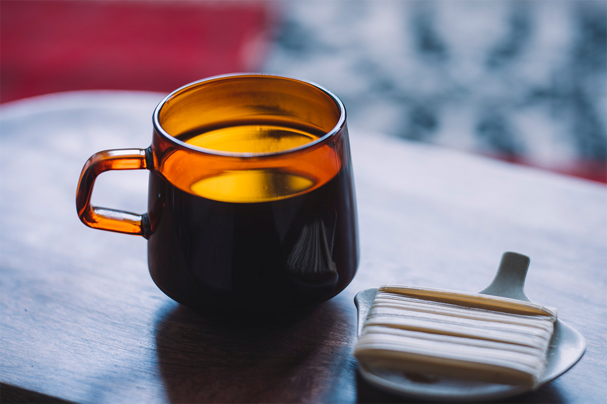
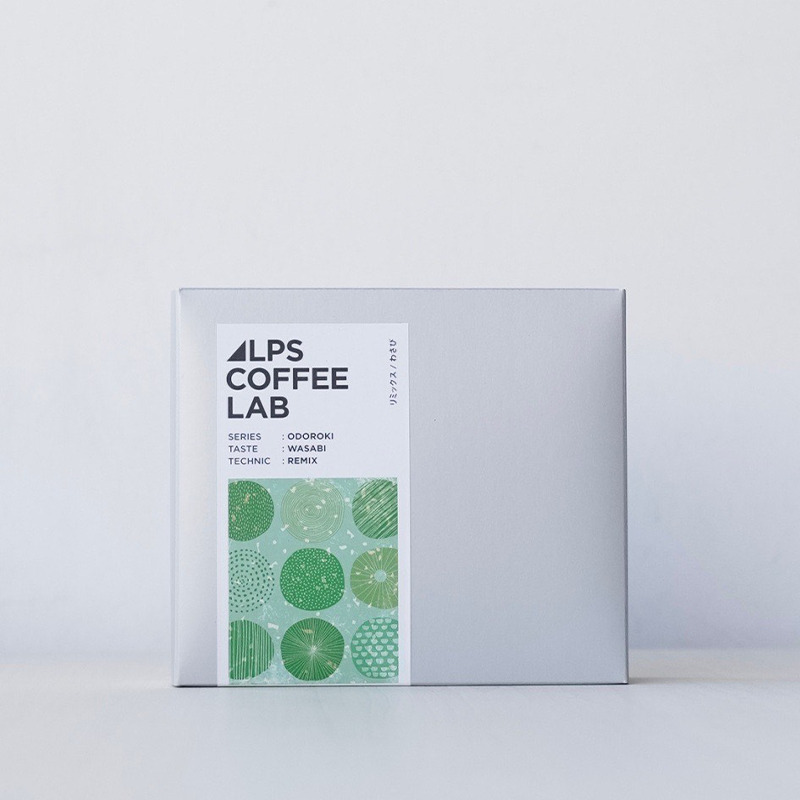
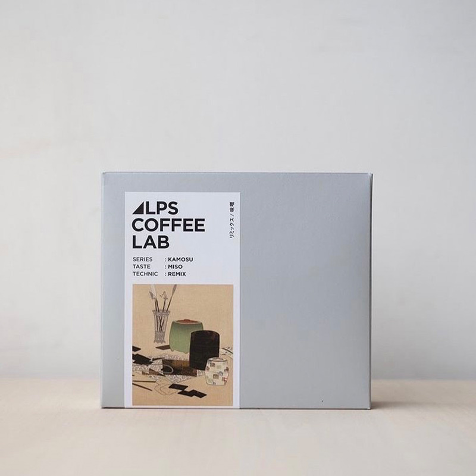
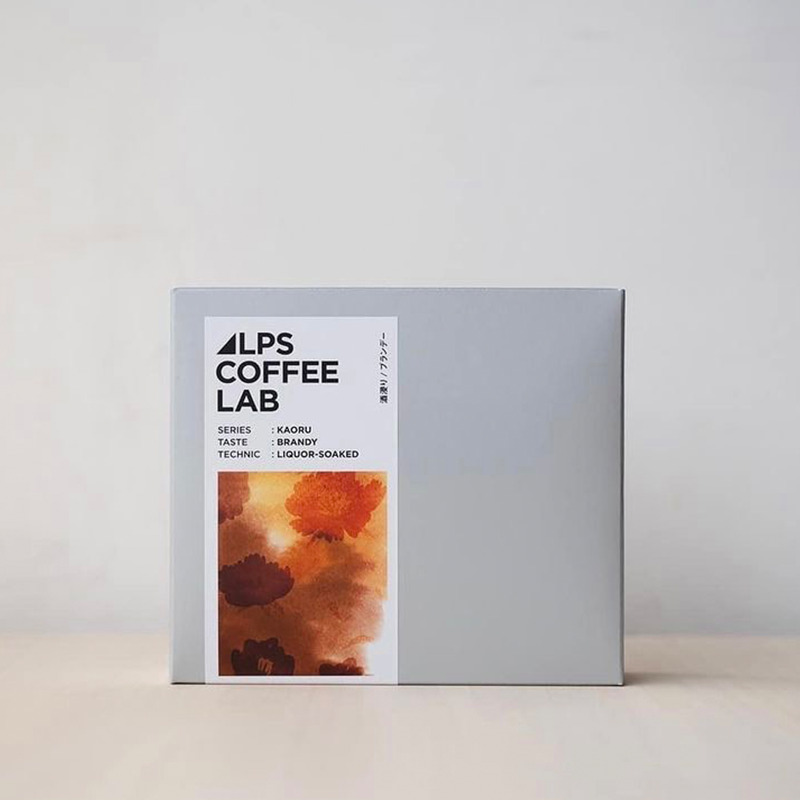
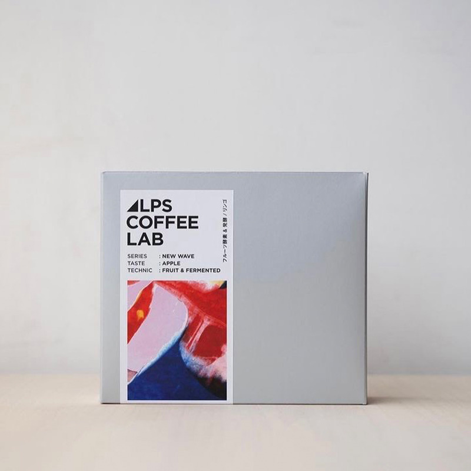
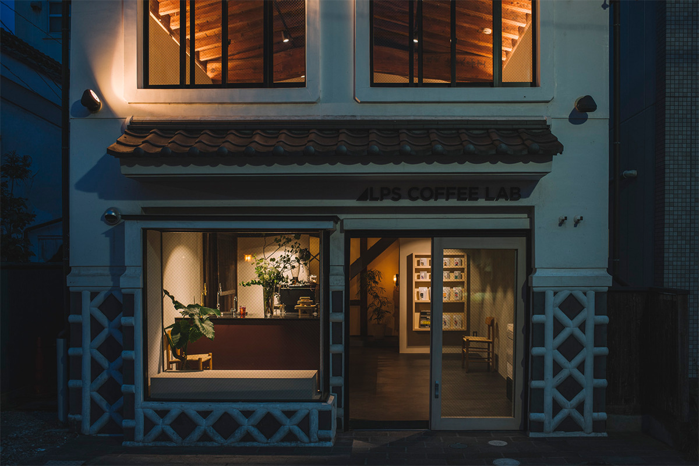

Префектура Нагано · Мацумото · кофе
ALPS COFFEE LAB в Мацумото: кофе с васаби, мисо и яблоками Синсю

В Мацумото есть кофейня, которая хочет делать кофе, подходящий японской земле и климату. В ALPS COFFEE LAB зёрна обжаривают сами и соединяют их со вкусами префектуры Нагано: васаби, мисо, бренди и яблоками.
Место
Кофейня в старом амбаре
ALPS COFFEE LAB обжаривает зёрна сама и занимает перестроенный старый амбар на берегу реки Метоба. Внизу продают кофе навынос, а на втором этаже устроили кафе, где можно посидеть подольше: за окнами там много зелени.

Обычно кофе в Японии привозной, а здесь задались вопросом: нельзя ли сделать кофе японским? Так появились зёрна, которые бродят вместе со свежими фруктами, и смеси с тем, что производят в Нагано: мисо, сакэ, специями и травами.
«Местные продукты рождаются такими, какими их делают здешняя земля, вода и воздух. Поэтому они и вкусные. Мне хотелось перенести это в кофе»
хозяин кофейни
Кофе задуман и как подарок из поездки. Для каждого вкуса придумали свою упаковку, чтобы кофе из Мацумото было легко взять в подарок или пить дома.

В самой кофейне можно сравнить, как меняется вкус в зависимости от обжарки. Для этого есть «кофейный эль»: эспрессо из зёрен светлой или тёмной обжарки, смешанный с пивом. В меню также есть кофейные коктейли.
Вкусы
Четыре кофе Синсю
Первый кофе сделан с васаби от «Маруи», производителя васаби из префектуры Нагано. Это кофе в японском стиле, лёгкий, как чай: свежесть васаби хорошо ложится на кофейную горечь. Второй вкус из той же серии «Ремикс» сделан с мисо «Марусё дзёдзо», одной из главных марок мисо в Нагано. В этом кофе соль и глубина мисо уравновешивают друг друга.


Третий кофе придумали вместе с «Хаяси нооэн», хозяйством, известным вином «Гоити». Сырые зёрна вымачивают в бренди и только потом обжаривают: аромат остаётся, а алкоголь при обжарке уходит, так что кофе получается безалкогольным.
Четвёртый кофе сделан с яблоками из Адзумино, долины у подножия Северных Альп. Сырые зёрна бродят вместе с яблоками, и от этого в кофе появляются сладость и аромат. Такую ферментацию зёрен со свежими фруктами или овощами в ALPS COFFEE LAB называют «Секонд нэчурал». В кофейне говорят, что в мире такого способа больше нет, и с его помощью кофе передаёт то, чего ему обычно не хватает: вкус места и времени года. В 2021 году каждый из четырёх стоил 980 иен с налогом.


Кофе со вкусом Синсю стоит попробовать здесь же, среди красивых видов у реки.

ALPS COFFEE LAB
- Адрес
- префектура Нагано, Мацумото, Тюо, 2-4-9
- Телефон
- +81 70-3196-2708
- Часы работы
- будни 6:00–18:00, выходные и праздники 10:00–18:00 (до 10:00 все напитки на 100 иен дешевле)
- Цены / Вход
- кофе из серии вкусов Синсю 980 иен с налогом